PSF model: Integrated form of a symmetric 2D Gaussian function
The integrated form of a symmetric two-dimensional Gaussian function can be used to help to take into account the discrete nature of pixels present in digital cameras [2, 1]. Assuming a uniform distribution of pixels with unit size, a single molecule intensity profile can be expressed as
where  gives the expected photon count at the integer pixel position 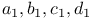
for a vector of parameters
gives the expected photon count at the integer pixel position 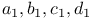
for a vector of parameters  and
and
| 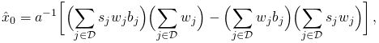 | 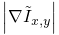 | |||
| 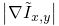 | 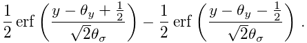 |
The entries of the vector  are as follows: 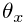
and 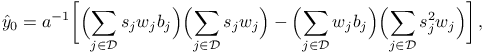 are the sub-pixel molecular coordinates, 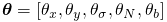
is the imaged size of the molecule,
are as follows: 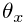
and 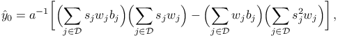 are the sub-pixel molecular coordinates, 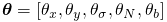
is the imaged size of the molecule,  corresponds to the
total number of photons emitted by the molecule, and
corresponds to the
total number of photons emitted by the molecule, and  corresponds to the background offset.
corresponds to the background offset.
References
- [1] (2011) Simultaneous multiple-emitter fitting for single molecule super-resolution imaging. Biomedical Optics Express 2 (5), pp. 1377–93. External Links: Document Cited by: PSF model: Integrated form of a symmetric 2D Gaussian function.
- [2] (2010) Fast, single-molecule localization that achieves theoretically minimum uncertainty. Nature Methods 7 (5), pp. 373–5. External Links: Document, ISSN 1548-7105 Cited by: PSF model: Integrated form of a symmetric 2D Gaussian function.
Generated on Sun Oct 4 04:52:26 2015 by LaTeXML ![[LOGO]]()